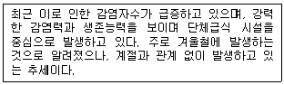
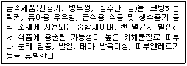
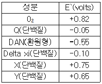

식품기사 (2008-03-02 기출문제)
1과목: 식품위생학
1. 미생물 포자의 발아와 성장을 억제하여 치즈 및 식육가공품에 사용되는 보존료는?
- salicylic acid
- benzoic acid
- dehydroacetic acid
- sorbic acid
(정답률: 63%)

2. 다이옥신에 대한 설명으로 틀린 것은?
- polychlorinate dibenzo-p-dioxin과 polychlorinate dibenzofurans 계열의 화합물을 말한다.
- PVC, PVDC 등을 1000~1200℃ 사이의 온도에서 소각할 때 발생한다.
- 중독시 흉선임파구의 감소현상과 함께 생식능력, 면역력의 감퇴가 나타난다.
- 화학구조적으로 매우 안정하며, 상온에서 결정으로 존재한다.
(정답률: 28%)
3. 식품을 경유하여 인체에 들어왔을 때 반감기가 길고 칼슘과 유사하여 뼈에 축적되며, 백혈병을 유발할 수 있는 방사성 핵종은?
- 스트론튬 90(Sr-90)
- 바륨 140(Ba-140)
- 요오드 131(I-131)
- 코발트 60(CO-60)
(정답률: 80%)
4. 유전자 재조합 식품의 안정성에 대한 평가시 평가항목이 아닌 것은?
- 항성과 내성
- 독성
- 알레르기 성
- 미생물 오염수준
(정답률: 85%)
5. 아래에서 설명하는 식중독 발생원인은?

- 살모넬라
- 캠필로박터
- 노로바이러스
- 장염비브리오균
(정답률: 81%)
6. 오염된 식품을 가열 조리하여 혐기성 상태에서 저장한 경우 내열성 아포가 증식하여 발생하는 식중독은?
- 웰치균 식중독
- 살모넬라 식중독
- 장염비브리오 식중독
- 병원성 대장균 식중독
(정답률: 65%)
7. 식품의 원재료에는 존재하지 않으나 가공처리공정 중 유입 또는 생성되는 위해인자와 거리가 먼 것은?
- 트리코테신(trichothecene)
- 다핵방향족 탄화수소(polynuclear aromatic hydrocarbons, PAHs)
- 아크릴아마이드(acrylamide)
- 모노클로로프로판디올(monochloropropandiol, MCPD)
(정답률: 75%)
8. 아래에서 설명하는 물질은?

- 비스페놀 A
- 다이옥신
- PCB
- 곰팡이 독소
(정답률: 75%)
9. 다음 중 차아염소산나트륨 소독시 비해리형 차아염소산(HCLO)으로 존재하는 양(%)이 가장 많을 때의 PH는?
- ph 4.0
- ph 6.0
- ph 8.0
- ph 10.0
(정답률: 78%)
10. 식품의 용기ㆍ포장에 사용하는 염화비닐수지 및 요소수지와 같은 합성수지제의 재질규격에서 공통으로 규제하는 성분은?
- 납 및 카드뮴
- 아연 및 비소
- 알칼리
- 안티몬
(정답률: 75%)
11. PCB(polychlorinated biphenyls)에 대한 설명으로 틀린 것은?
- 미강유, 제조 과정에서 오염된 사례가 있다
- 중독 환자는 여드름 모양의 피부발진과 발한과다 증상이 있다.
- 중독되면 간종양과 간경련을 유발할 수 있다
- 수중에서는 장기간 잔류하나 토양에서는 단기간에 소멸된다.
(정답률: 83%)
12. 아급성독성시험에 대한 설명으로 틀린 것은?
- 시험동물 수명의 1/10 정도의 기간동안 시험한다.
- 연속 경구투여하여 발현용량, 중독증상 및 사망률을 관찰한다.
- 표적대상기관을 검사한다.
- 주로 양 - 영향관계(does-effect relationship)를 관찰한다.
(정답률: 56%)
13. Clostridium botulinum에 의한 식중독의 설명으로 틀린 것은?
- 원인균은 그램양성의 편성 혐기성 간균으로 아포를 형성한다.
- 독소는 분자량 5000정도의 복합단백질로 알려져 있다
- 식중독을 유발하는 것은 주로 A, B, E F형이다
- 주증상은 복시, 시력저하, 호흡장애 등으로 심하면 사망한다.
(정답률: 47%)
14. 식품 등의 표시기준에 의한 제조연월일(제조일) 표시대상 식품에 해당하지 않는 것은?
- 김밥(즉석섭취식품)
- 설탕
- 식염
- 껌류
(정답률: 51%)
15. 부식되지 않고 열전도성이 좋지만, 습기나 이산화탄소가 많은 곳에서는 산가용성의 녹청(綠靑)이 형성되어 위생상의 위해를 초래할 수 있는 금속제 용기 재료는?
- 납(Pb)
- 구리(Cu)
- 카드뮴(Cd)
- 알루미늄(Al)
(정답률: 60%)
16. 전염병으로 죽은 돼지를 삶아서 먹었음에도 불구하고 사망자가 발생하였다면 다음 중 어느 균에의한 발병일 가능성이 가장 높은가?
- 결핵
- 탄저
- 야토병
- 브루셀라
(정답률: 67%)
17. HACCP의 중요관리점에서 모니터링의 측정치가 허용한계치를 이탈한 것이 판명될 경우, 영향을 받은 제품을 배제하고, 중요관리점에서 관리상태를 신속, 정확히 정상으로 원위치 시키기 위해 행해지는 과정은?
- 기록유지(Record keeping)
- 예방조치(Preventive action)
- 개선조치(Corrective action)
- 검증(Verification)
(정답률: 87%)
18. 식품에서 어떤 화학물질이 100ppm 검출되었다면 이는 몇 %에 해당되는가?
- 0.1%
- 0.01%
- 0.001%
- 0.0001%
(정답률: 54%)
19. 식품의 자진회수(recll)제도에 대한 설명으로 틀린 것은?
- 식품위생상의 위해가 발생할 우려가 있다고 인정 될 때
- 위해가 중대하고 긴박할 때에도 반드시 식품의약품 안전청에서 설치된 심의위원회의 심의를 받아 시행한다.
- 수거된 제품은 다른 제품으로부터 격리된 장소에 보관하여야 한다.
- 자진회수를 성실히 한 영업자에 대하여는 감면기준에 의해 행정처분이 감면될 수 있다.
(정답률: 66%)
20. 식품위생법상 식품위생감시원의 직무가 아닌 것은?
- 식품 등의 위생적 취급기준의 이행지도
- 출입 및 검사에 필요한 식품 등의 수거
- 중요관리점(CCP) 기록 관리
- 행정퍼분의 이행여부의 확인
(정답률: 51%)
2과목: 식품화학
21. 식용유지의 과산화물가(peroxide value)가 80밀리 당량(meq/kg)인 경우, 밀리몰(mM/kg)로 표시된 과산화물가는?
- 10mM/kg
- 20mM/kg
- 30mM/kg
- 40mM/kg
(정답률: 75%)
22. dextran은 α-D-glucose가 주로 어떤 결합을 통해 사슬 모양으로 이어지는가?
- α-1, 1 결합
- α-1, 2결합
- α-1, 4 결합
- α-1, 6결합
(정답률: 36%)
23. 전분의 호화에 대한 설명으로 틀린 것은?
- 전분의 호화는 수분함량이 많을수록 잘 일어난다.
- 곡류전분은 감자, 고구마 전분보다 호화되기 어렵다.
- ph의 변화는 호화에 영향을 미친다.
- 전분에 염류를 넣으면 호화가 일어나지 않는다.
(정답률: 70%)
24. 유지의 굴절율에 대한 설명으로 옳은 것은?
- 불포화도와 굴절율은 상관관계가 없다.
- 불포화도가 클수록 굴절율은 증가한다.
- 분자량과 굴절율은 상관관계가 없다.
- 분자량이 클수록 굴절율은 감소한다.
(정답률: 74%)
25. 육류나 육류 가공품의 육색소를 나타내는 주된 성분으로 근육세포에 함유되어 있는 것은?
- 미오글로빈(myoglobin)
- 헤모글로빈(hemoglobin)
- 시토스테롤(sitosterol)
- 시토크롬(cytocrom)
(정답률: 88%)
26. 캐러멜화(caramelization)의 반응에서 일어나지 않는 현상은?
- HMF(hydroxymethyl furfural)의 생성
- Humin 물질의 형성
- Lobry de Bruyn-Alberda van Eckenstein전위
- Amadori 전위
(정답률: 52%)
27. 콜로이드 상태를 유지하고 있는 식품은?
- 과자
- 콜라
- 마요네즈
- 떡
(정답률: 47%)
28. 트랜스지방에 대한 설명으로 틀린 것은?
- 자연상태의 지방산은 트랜스지방산이 거의 없다.
- 트랜스지방산을 많이 섭취하면 순환기계통의 질병에 걸리기 쉽다.
- 유지의 소소 첨가 과정에서 생성된다.
- WHO(세계보건기구)는 하루 섭취열량 기준의 5% 이내로 권장하고 있다.
(정답률: 52%)
29. 훈제품 제조와 관련된 설명으로 틀린 것은?
- 연기성분 중에는 페놀 성분도 포함되어 있다.
- 연기성분 중 포름알데히드, 크레졸은 환원성 물질로 지방산화를 막아준다.
- 질산칼륨을 첨가하는 이유는 아질산염을 거쳐서 산화질소가 유리되는 것을 방지하기 위한 것이다.
- 생선된 산화질소는 미오글로빈과 결합 후 가열과정을 통하여 니트로소미오크로모겐으로 변화한다.
(정답률: 54%)
30. 건조분말의 물성 특성을 설명한 것으로 옳은 것은?
- 작은 입자들이 서로 엉겨 붙어 덩어리를 만들면 습윤성이 나빠진다.
- 표면에 지방이 존재하면 습윤성은 증가한다.
- 입자크기와 밀도가 작을수록 침강성이 좋다
- 입자의 덩어리가 클수록 분상성이 좋다.
(정답률: 52%)
31. 관능검사의 차이식별검사 방법을 크게 종합적 차이점과 특성검사차이검사로 나눌 때 다음 중 종합적차이검사에 해당하는 것은?
- 삼점검사
- 다중비교검사
- 순위법
- 평점법
(정답률: 74%)
32. 배추나 오이로 김치를 담그면 시간이 지남에 따라 녹색이나 갈색으로 변하게 되는데, 이때 생성되는 갈색 물질은?
- 페오피틴(pheophytin)
- 포르피린(phorphyrin)
- 피톨(phytol)
- 프로피온산(propionic acid)
(정답률: 43%)
33. 콜로이드 입자가 가지는 성질이 아닌 것은?
- 반투성
- 틴들(Tyndall)현상
- 브라운(brown)운동
- 삼투압
(정답률: 59%)
34. 도살된 동물에서 일어나는 현상은?
- ph가 올라간다.
- ATP 생성이 감소된다.
- creatine phosphate가 감소된다.
- 젖산 생성이 증가한다.
(정답률: 62%)
35. 육류 단백질을 과잉으로 섭취하게 되면 가수분해 과정에 의한 완전한 분해가 지연되고, 우리 몸에 축적되게 되는데 이런 경우 과잉 섭취된 단백질의 최종 주대사산물은?
- 암모니아가스
- 탄산가스
- 크레아틴
- 요소
(정답률: 54%)
36. 건조한 다시마 표면의 흰 가루의 주성분은?
- 포도당(glucose)
- 만니톨(mannitol)
- 글루탐산(glutamic acid)
- 알긴산(alginic acid)
(정답률: 43%)
37. 고춧가루를 만들어 창고에 보관할 때 적갈색이 되어 품질이 저하되는 변화를 최소화할 수 있는 방법이 아닌 것은?
- 햇빛을 차단하기 위하여 알루미늄 호일로 재 포장한다.
- 진공포장을 하여 산소를 차단시킨다.
- 냉동고에 보관하여 온도에 의한 영향을 줄인다.
- 보존료로 안식향산나트륨을 첨가하여 미생물의 오염이 일어나지 않도록 한다.
(정답률: 55%)
38. 밀가루 단백질 중 반죽 형성시 점착성과 연한 성질을 부여 하는 것은?
- 알부민(albumin)
- 글로불린(globulin)
- 글루테닌(glutenin)
- 글리아딘(gliadin)
(정답률: 53%)
39. 데치기(blanching) 공정시 공정이 잘 되었는지를 확인하는 효소로 가장 적합한 것은?
- polyphenol oxidase
- peroxidase
- lipase
- cellulase
(정답률: 52%)
40. 다음 식품 중 뉴턴 유체가 아닌 것은?
- 물
- 커피
- 마요네즈
- 맥주
(정답률: 76%)
3과목: 식품가공학
41. 42% 전분유 1L를 산분해시켜 DE값이 42가 되는 물엿을 만들었을 때 생성된 환원당의 양은?
- 420.0g
- 176.4g
- 100.8g
- 84.0g
(정답률: 54%)
42. 식품의 단위공정(unit processing)이란?
- 식품성분의 공학적 변화를 일으키는 공정
- 식품성분의 화학반을을 수반하는 가공과정
- 식품의 물리적 변화를 취급하는 조작
- 식품의 물리, 화학적 변화를 취급하는 조작
(정답률: 36%)
43. 과일 및 채소의 올바른 저장법은?
- 생체조직의 기능을 완전히 중단시켜 호흡을 정지시키고 저온저장 한다.
- 저장고 내를 CO2 가스로 완전히 채워 호흡을 정지시키고 저온저장 한다.
- 생체조직의 기능을 살려 최소의 호흡을 하게하고 저온저장 한다.
- 저장고 내를 질소가스로 완전히 채워 호흡을 정지시키고 저온저장 한다.
(정답률: 56%)
44. 다음 중 두부 제조시 두유를 응고시키는 가장 적합한 온도는?
- 30~40℃
- 50~60℃
- 70~80℃
- 90~100℃
(정답률: 62%)
45. 다음 중 과일잼의 젤리화력이 가장 큰 ph범위는?
- ph 4.2 ~ 6.5
- ph 3.3 ~ 4.2
- ph 2.8 ~ 3.3
- ph 1.5 ~ 2.8
(정답률: 56%)
46. 경화유 제조에 사용되는 수소 첨가용 촉매는?
- Pd
- Au
- Fe
- Ni
(정답률: 78%)
47. cream separator로서 가장 적합한 원심 분리기는?
- tubular bowl centrifuge
- solid bowl centrifuge
- nozzle discharge centrifuge
- disc bowl centrifuge
(정답률: 48%)
48. 전단속도(shear rate)가 커짐에 따라 겉보기 점도(apparent viscosity)가 증가하는 유체는?
- Nowtonian
- shear - thining(pseudoplastic)
- shear - thickening(dilatant)
- Bingham plastic
(정답률: 58%)
49. 모세관점도계를 통하여 20℃물이 흘러내리는데 걸린 시간은 1분 25초 였으며, 같은 온도에서 과실주스가 흘러내리는데 걸린 시간은 3분 35초였다 이 주스의 비중을 1.0이라 가정하고 주스의 점도를 계산하면 약 얼마인가?
- 1.02mPaㆍs
- 1.52mPaㆍs
- 2.02mPaㆍs
- 2.53mPaㆍs
(정답률: 35%)
50. 제빵공정 중 1차 발효 후 가스빼기를 실시하는 이유로 적합 하지 않은 것은?
- 발효에 의하여 축적된 이산화탄소를 내보내기 위하여
- 빵 반죽이 너무 커지는 것을 막기 위해
- 신선한 공기를 주어 효모의 활동을 왕성하게 하기 위해
- 효모를 새로운 영양분과 접촉시켜 활성화하기 위해
(정답률: 61%)
51. 마요네즈 제조시 유화제 역할을 하는 것은?
- 난황
- 식초산
- 식용유
- 소금
(정답률: 79%)
52. 소시지 가공제품 제조시 염지의 효과가 아닌 것은?
- 근육단백질의 용해성을 증가시킨다.
- 보수성과 결착성을 증진시킨다.
- 방부성과 독특한 맛을 갖게 한다.
- 단백질을 변성시키고 살균한다.
(정답률: 78%)
53. 탈지분유의 제조공정 순서로 맞는 것은?
- 탈지 → 농축 → 가열 → 균질 → 건조
- 탈지 → 가열 → 농축 → 균질 → 건조
- 농축 → 탈지 → 균질 → 농축 → 건조
- 균질 → 탈지 → 가열 → 농축 → 건조
(정답률: 67%)
54. 무균포장의 특징 설명으로 틀린 것은?
- 무균포장제품은 멸균되었기 때문에 열에 불안정한 식품에서 일어나기 쉬운 품질변화를 최소화 할 수 있다.
- 단점은 연속공정생산이 어렵고 대형포장제품을 만들 수 없다는 것이다.
- 냉장 없이 상온에서 장기간 보존이 가능하다.
- 멸균용기에 포장하므로 내열성 포장이 필요 없고 플라스틱이나 종이를 소재로한 복합재질을 포장용기로 사용할 수 있다.
(정답률: 50%)
55. 마요네즈 분리현상의 원인에 해당하지 않은 것은?
- 저온 저장한 경우
- 식용유 첨가량이 과다한 경우
- 교반방법이 적당하지 않은 경우
- 뚜껑을 열어 놓은 상태에서 건조된 경우
(정답률: 49%)
56. 어류 통조림 제조시 나타나는 스투르바이트(struvite)에 대한 설명으로 틀린 것은?
- 통조림 내용물에 유리 모양의 결정이 석출 되는 현상 이다.
- 어류에 들어있는 마그네슘 및 인화합물과 어류가 분해되어 생성된 암모니아가스가 결합하여 생성된다.
- 중성 혹은 약알칼리성 통조림에 생기기 쉽다.
- 살균한 후 통조림을 급랭시키면 스트루바이트 현상이 생기기 쉽다.
(정답률: 42%)
57. 다음 식품포장재 중 내수성이 가장 강한 것은?
- 염화비닐리덴
- 폴리에틸렌
- 폴리프로필렌
- 폴리아미드
(정답률: 25%)
58. 멸치젓 제조시 소금으로 절여 발효할 때 나타나는 현상이 아닌 것은?
- 과산화물가(peroxide value)가 증가한다.
- 가용성 질소가 증가한다.
- 맛이 좋아진다.
- pH가 증가한다.
(정답률: 52%)
59. 유지의 윈터링(wintering)또는 윈터리제이션(winterization)의 설명으로 틀린 것은?
- 유지가 저온에서 굳어져 혼탁해지는 것을 방지한다.
- 바삭바삭한 성질을 부여하는 공정이다.
- 고체지방을 석출ㆍ 분리한다.
- 중성지질과 가공유지에 사용된다.
(정답률: 65%)
60. 식품의 유통기한 설정에 관한 설명으로 틀린 것은?
- 유통기한 설정시 품질변화의 지표물질은 반응속도에서 높은 반응차수를 갖는 것이 바람직하다.
- 장기간 유통조건하에서 관능검사를 통하여 유통기한을 설정할 수 있다.
- 유통 중 품질변화를 반응속도론에 근거하여 수학적으로 예측하여 유통기한을 설정할 수 있다.
- 유통기한 설정의 조건 인자에는 저장시간, 수분함량, 온도, pH 등이 있다.
(정답률: 31%)
4과목: 식품미생물학
61. 효모군의 동정과 관계없는 것은?
- 포자의 유무와 모양
- 라피노스(raffinose) 이용성
- 편모염색
- 피막형성
(정답률: 65%)
62. Aspergillus 속에 속하는 곰팡이에 대한 설명으로 틀린 것은?
- A. oryzae는 단백질 분해력과 전분 당화력이 강하여 주류 또는 장류 양조에 이용된다.
- A. glaucus군에 속하는 곰팡이는 건조에 대한내성이 크다.
- A. niger는 대표적인 황국균이며 알코올 발효용 코오지 곰팡이균에 이용된다.
- A. flavus는 aflatoxin을 생산한다.
(정답률: 63%)
63. 식품공장에서의 파아지(phage) 예방법으로 적합하지 않은 것은?
- 2종 이상의 균주 조합 계열을 만들어 2 ~3 일 마다 바꾸어 사용한다.
- 내성균주를 사용한다.
- 공장 내의 공기를 자주 바꾸어 주거나 온도, pH 등의 환경조건을 변화시킨다.
- 공장과 주변을 청결히 하고 용기의 가열ㆍ 살균약제 사용 등을 철저히 한다.
(정답률: 59%)
64. 김치발효시 발효초기에 생육하고 다른 젖산균보다 급속히 발효하여 생성되는 산으로 다른 세균의 생육을 억제하는 그람양성 구균은?
- Leuconstoc mesenteroides
- Streptococcus faecalis
- Lactobacillus plantarum
- Saccaromyces cerevisiae
(정답률: 64%)
65. 원핵세포의 특징이 아닌 것은?
- 핵양체가 있다.
- 인이 있다.
- 세포벽은 펩티도글리칸(peptidoglycan)층으로 구성되어 있다.
- 미토콘드리아 대신에 메소좀(mesosome)을 가지고 있다.
(정답률: 60%)
66. 당류의 발효성 실험법으로 적합하지 않은 것은?
- Lindner법
- Durham tube법
- Einhorn tube법
- Stelling-Dekker법
(정답률: 58%)
67. 혐기성 포자형성 세균은?
- Enterobacter속
- Escherichia속
- Clostridium속
- Bacillus 속
(정답률: 76%)
68. 광합성을 하는 조류(algae)와 일반 균류를 구별할 수 있는 가장 특징적인 특성은?
- 엽록소 함유
- 증식 방법
- 크기
- 형태
(정답률: 72%)
69. 다극출아에 의하여 증식하는 효모는?
- Nadsonia속
- Saccharomycode속
- Saccharomyces속
- Schizosaccharomyces속
(정답률: 52%)
70. 광합성 무기영양균(photolithotroph)의 특징이 아닌 것은?
- 에너지원을 빛에서 얻는다.
- 탄소원을 이산화탄소로부터 얻는다.
- 녹색황세균과 홍색황세균이 이에 속한다.
- 모두 호기성균이다.
(정답률: 78%)
71. 주류 발효시 발효를 순조로히 진행시키기 위하여 효모균체를 많이 번식시킨 것을 무엇이라고 하는가?
- 국(麴)
- 주모(主母)
- 덧
- 맥아(麥芽)
(정답률: 39%)
72. 접합균류(Zygomycotina)에 속하지 않는 곰팡이는?
- Absidia속
- Aspergillus속
- Rhizopus속
- Mucor속
(정답률: 62%)
73. 미생물에서 협막과 점질층의 구성물이 아닌 것은?
- 다당류
- 폴리펩타이드
- 지질
- 핵산
(정답률: 55%)
74. 젖산균이 우유 중의 구연산으로부터 생성하는 발효유의 대표적인 향기 성분은?
- 알코올(alcohol)
- 에스테르(ester)
- 케톤(ketone)
- 디아세틸(diacetyl)
(정답률: 36%)
75. 숙주세균 세포의 형질이ㆍ 플라스미드(plasmid)를 매개로 수용세균의 세포에 운반되어 재조합에 의해 유전형질이 도입되는 것은?
- 접합(conjugation)
- 형질전환 (transformation)
- 형질도입 (transduction)
- 세포융합 (cell fusion)
(정답률: 28%)
76. 세균의 지질다당류(lipopolysaccharide)에 대한 설명 중 옳은 것은?
- 그람양성균의 세포벽 성분이다.
- 세균의 세포벽이 양(+) 전하를 띠게 한다.
- 지질 A, 중심 다당체, H 항원의 세부분으로 이루어져 있다.
- 독성을 나타내는 경우가 많아 내독소로 작용한다.
(정답률: 32%)
77. 식품에서 발견되는 대부분의 미생물은 생육에 필요한 에너지와 탄소원을 무엇으로부터 얻는가?
- 열에너지
- 무기물
- 빛에너지
- 유기물
(정답률: 56%)
78. 돌연변이에 대한 설명 중 틀린 것은?
- 자연적으로 일어나는 자연돌연변이와 변이원 처리에 의한 인공돌연변이가 있다.
- 돌연변이의 근본적 원인은 DNA의 nucleotide 배열의 변화이다.
- 염기배열변화의 방법에는 염기첨가, 염기결손염기치환 등이 있다.
- point mutation은 frame shift에 의한 변이에 비해 복귀돌연변이(back mutation)가 되기 어렵다.
(정답률: 66%)
79. 세포융합(cell fusion)의 실험순서로 옳은 것은?
- 재조합체 선택 및 분리 → protoplast의 융합 → 융합체의 재생 → 세포의 protoplast화
- protoplast의 융합 → 세포의 protoplast화 → 융합체의 재생 → 재조합체 선택 및 분리
- 세포의 protoplast화 → protoplast의 융합 → 융합체의 재생 → 재조합체 선택 및 분리
- 융합체의 재생 → 재조합체 선택 및 분리 → protoplast의 융합 → 세포의 protoplast화
(정답률: 77%)
80. 원핵세포와 진핵세포의 차이점이 아닌 것은?
- 핵막의 유무
- 세포분열방법
- 세포벽의 유무
- 미토콘드리아의 유무
(정답률: 44%)
5과목: 생화학 및 발효학
81. 어떤 생명체의 전자전달계의 각 성분의 E`(표준산화환원전위)가 아래 표와 같을 때 전자전달계의 순서는?

- DAN → Delta xi → Q → Y → X → O2
- DAN → Delta xi → Y → Q → X → O2
- O2 → X → Y → Q → Delta xi → DAN
- O2 → X → Q → Y → Delta xi → DAN
(정답률: 49%)
82. t-RNA에 대한 설명으로 틀린 것은?
- 활성화된 아미노산과 특이적으로 결합한다.
- anti-codon을 가지고 있다.
- codon을 가지고 있어 r-RNA와 결합한다.
- codon의 정보에 따라 m-RNA와 결합한다.
(정답률: 50%)
83. pyrimidine 유도체로서 핵산 중에 존재하지 않는 것은?
- cytocrom
- uracil
- thymine
- adenin
(정답률: 52%)
84. Saccharomyces cerevisiae를 사용하여 glucose를 발효 시킬 때의 설명으로 틀린 것은?
- 통기발효시 반응산물은 6CO2, 6H2O 이다.
- 혐기적발효시 반응산물은 2CH3CH2OH, 2CO2이다.
- 통기발효할 때는 혐기적발효 때보다 효모의 균체가 많이 생긴다.
- 빵효모를 생산할 때는 혐기조건하에서 발효시킨다.
(정답률: 58%)
85. 에너지를 공급함으로써 화학적 농도 차이나 전위차를 역행하여 분자를 일방적으로 이동시키는 기작은?
- 확산
- 능동수송
- 내포(endocytosis)
- 신경자극 전달
(정답률: 71%)
86. 비당화 발효법으로 알코올 제조가 가능한 원료는?
- 섬유소
- 곡류
- 당밀
- 고구마, 감장
(정답률: 63%)
87. 유기산 생합성 경로 중 TCA 회로상에서 생성되는 유기산이 아닌 것은?
- citric acid
- lactic acid
- succinic acid
- malic acid
(정답률: 69%)
88. glutamic acid 발효 생산균의 특징이 아닌 것은?
- Gram 양성 이다.
- 운동성이 있다.
- Biotin 요구성이다.
- 포자를 형성하지 않는다.
(정답률: 47%)
89. 설탕용액에서 생장할 때 dextran을 생산하는 균주는?
- Leuconostoc mesenteroides
- Aspergillus oryzae
- Lactobacillus delbrueckii
- Rhizopus oryzae
(정답률: 57%)
90. 핵산의 구성성분인 purine 고리 생합성에 관련이 없는 아미노산은?
- glycine
- tyrosine
- aspartate
- glutamine
(정답률: 40%)
91. 미생물에 의한 아미노산 생성 계열 중 aspartic acid 계열에 속하지 않는 것은?
- valine
- threonine
- isoleucine
- methionine
(정답률: 32%)
92. 포도당과 산소를 제거하고 산화에 의한 식품의 갈변 방지에 이용되는 효소는?
- tannase
- cellulase
- glucose oxidase
- glucose isomerase
(정답률: 70%)
93. 내열성 α -amylase 생산에 이용되는 균은?
- Aspergillus niger
- Bacillus licheniformis
- Rhizopus oryzae
- Trichoderma reesei
(정답률: 51%)
94. Calvin cycle의 주요 단계에 대한 설명으로 틀린 것은?
- 첫단계는 ribulose -1, 5 - biphosphate carboxylase-oxygenase에 의한 카르복시화 이다.
- 두 번째 단계는 환원단계로서 회로에서 생산되는 ATP와 NAPH의 2/3가 생성된다
- 회로의 카르복시화 반응을 제외한 나머지 반응은 해당작용과 5탄당인산대사에서의 반응과 유사하다.
- 3번째 단계는 재생성 단계로서 이 회로를 작동하기 위해 필요한 ribulose-1, 5 - biphosphate의 재생산이 이루어진다.
(정답률: 29%)
95. 핵산의 무질소 부분 대사에 대한 설명으로 옳은 것은?
- 인산은 대사 최종산물로서 무기인산염 형태로 소변으로 배설된다.
- 간, 근육, 골수에서 요산이 생성된 후 소변으로 배설된다.
- NH3를 방출하면서 분해되고 요소로 합성되어 배설된다.
- pentose는 최종적으로 분해되어 allantoin으로 전환되어 배설된다.
(정답률: 41%)
96. 산화환원계의 보효소에 대한 설명으로 틀린 것은?
- Nicotinamide nucleotide : 혐기성 탈수소효소의 보효소로서 NAD와 NADP의 2종류가 있음
- Flavin nucleotide : FNM과 FAD의 2종류가 있으며 FADH2 한 분자마다 2분자의 ATP가 생성
- Cytocrome : 산화적 탈탄산 반응에 관여하는 효소의 보효소로 -S-S- 결합에 의해 산화환원 작용
- Ubiquinone : Coenzyme Q라 하며 FeS flavoprotein 으로부터 전자를 수용하여 cytocrome에 전달하는 보조인자
(정답률: 41%)
97. 유전자 재조합 기술에 사용되는 제한효소(restriction endonuclease)들이 주로 인식하는 DNA상의 특수 염기서열로, DNA 가닥에서 hairpin 또는 criciform 구조를 형성하게 하는 염기배열은?
- 거울상 반복 구조(mirror repeat)
- 회문구조(palindrome)
- 나선형 구조(helicase)
- 베타 굽힘 구조(β-bending)
(정답률: 32%)
98. fusel oil의 고급 알코올은 무엇으로부터 생성 되는가?
- 포도당
- 에틸 알코올
- 아미노산
- 지방
(정답률: 56%)
99. [S]=Km이며 효소반응속도 값이 20㎛ol/min 일 때 Vmax 는? (단[S]는 기질농도, Km은 미하엘리스 상수)
- 10 ㎛ol/min
- 20 ㎛ol/min
- 30 ㎛ol/min
- 40㎛ol/min
(정답률: 63%)
100. DNA 분자의 purine과 pyrimidine염기쌍 사이를 연결하는 결합은?
- 공유결합
- 수소결합
- 이온결합
- 인산결합
(정답률: 76%)